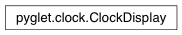

ClockDisplay Class¶
-
class
ClockDisplay(font=None, interval=0.25, format=’%(fps).2f’, color=(0.5, 0.5, 0.5, 0.5), clock=None)¶ Display current clock values, such as FPS.
This is a convenience class for displaying diagnostics such as the framerate. See the module documentation for example usage.
Variables: label – The label which is displayed. Warning
Deprecated. This class presents values that are often misleading, as they reflect the rate of clock ticks, not displayed framerate. Use pyglet.window.FPSDisplay instead.